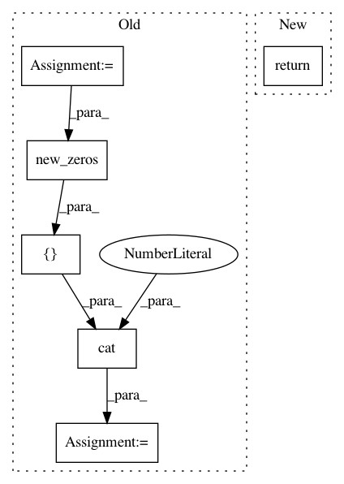

17aafdea24122bbb777f71a8ea7c2505e3fee84c,torch_geometric/nn/models/autoencoder.py,GAE,reconstruction_loss,#GAE#Any#Any#Any#,71
Before Change
row, col = edge_index
pos_y = adj.new_ones(row.size(0))
neg_y = adj.new_zeros(neg_adj_mask.sum().item())
y = torch.cat([pos_y, neg_y], dim=0)
pred = torch.cat([adj[row, col], adj[neg_adj_mask]], dim=0)
pos_weight = torch.tensor([neg_y.size(0) / pos_y.size(0)])
pos_weight = pos_weight.to(adj.device)
After Change
row, col = edge_index
loss = -torch.log(torch.sigmoid(adj[row, col])).mean()
loss = loss - torch.log(1 - torch.sigmoid(adj[neg_adj_mask])).mean()
return loss
def eval(self, adj, edge_index, neg_edge_index):
pos_y = adj.new_ones(edge_index.size(1))
neg_y = adj.new_zeros(neg_edge_index.size(1))
In pattern: SUPERPATTERN
Frequency: 3
Non-data size: 6
Instances
Project Name: rusty1s/pytorch_geometric
Commit Name: 17aafdea24122bbb777f71a8ea7c2505e3fee84c
Time: 2019-03-15
Author: matthias.fey@tu-dortmund.de
File Name: torch_geometric/nn/models/autoencoder.py
Class Name: GAE
Method Name: reconstruction_loss
Project Name: pytorch/fairseq
Commit Name: 3dcb5c77165c1a0c33a35a7831182f1aa2e8ad73
Time: 2019-10-18
Author: changhan@fb.com
File Name: fairseq/models/model_utils.py
Class Name:
Method Name: fill_tensors